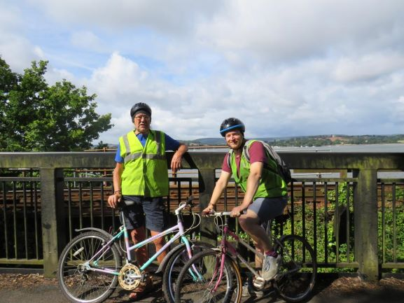

July 2020
8) Clyst St Mary - Exmouth

7) Clyst St Mary - Darts Farm
Easy peasy round tip to Darts farm. Perfect for 50 year old, rusty girly bikes.
6) Horley - Reigate - Buckland - Boxhill
Really pleasant route, steady uphill to the top of Boxhill. Pint at the Pheasant in Buckland. Optional start at the pheasant is a 12 miles loop round boxhill.
5) Horley - Horse Hill - Charlwood - Rusper - Ifield
4) Horley - Hathershame Lane - Redhill Aerodrome - Gail Lane
Easy route for am cycle up to Redhill aerodrome - huge breakfast and downhill home! Nice route through Hathershame lane goes along a path through the woods.
3) Leith Hill - Coldharbour - Capel
The plough Inn (Coldharbour), The Crown (Capel) are on route! Good ride up to the top of Leith Hill with great views and nice ride through woods. Fun downhill out of Coldharbour.
2) Horley, Smallfield, Outwood, Redhill Aerodrome, Gail Lane
A few hills - the Bell in Outwood is refreshing after climbing Hornecourt Hill
1) Horley - Reigate - Leigh - Charlwood - Gatwick
Really nice route - Plough pub (Leigh), Fox Revived (Norwood Hill) and The Charlwood (Charlwood)